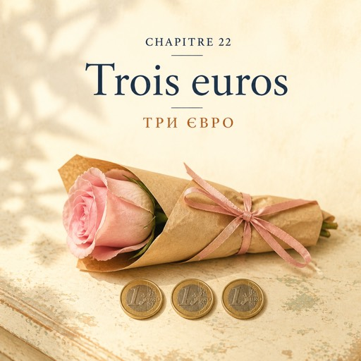

0:00
2:09
Натисніть речення, щоб почути його окремо.
Щоб слухати з підсвіткою — відкрийте сторінку в браузері.
Le mercredi 22 octobre — середа, 22 жовтня
À dix heures du matin, il y a des enfants dans la rue.
О десятій ранку на вулиці — діти.
Le magasin, lui, est calme.
А в магазині тихо.
Solange est dans l'atelier. Personne n'entre.
Соланж у майстерні. Ніхто не заходить.
La porte s'ouvre. Natalia lève la tête : personne. Elle baisse les yeux.
Двері відчиняються. Наталя підводить голову: нікого. Вона опускає очі.
Devant le comptoir, une petite fille.
Перед прилавком — маленька дівчинка.
Sa tête arrive juste au bois.
Її голова якраз дістає до дерева прилавка.
Elle tient sa main fermée, très fort.
Долоню вона тримає стиснутою — дуже міцно.
C'est Sophie. Elle habite au coin de la rue. D'habitude, elle court.
Це Софі. Вона живе на розі вулиці. Зазвичай вона бігає.
— Bonjour, mademoiselle.
— Добрий день, мадемуазель.
— Bonjour. C'est combien, une fleur ?
— Добрий день. Скільки коштує квітка?
— Ça dépend. Une anémone, deux euros. Une rose, trois euros.
— Як яка. Анемона — два євро. Троянда — три євро.
Sophie réfléchit.
Софі думає.
— Je veux la plus belle.
— Я хочу найгарнішу.
— La plus belle. C'est pour offrir ?
— Найгарнішу. Це в подарунок?
— Oui. C'est pour ma maîtresse.
— Так. Це для моєї вчительки.
Natalia ne sourit pas. Elle pose ses questions, comme pour tout le monde.
Наталя не всміхається. Вона ставить свої питання — як усім.
— Elle aime quelle couleur, votre maîtresse ?
— Який колір вона любить, ваша вчителька?
« Votre ». Sophie lève la tête un peu plus haut.
«Ваша». Софі підводить голову трохи вище.
— Le rose. Ma maîtresse a un manteau rose. Elle habite dans ma rue. Je la vois tous les jours.
— Рожевий. У моєї вчительки рожеве пальто. Вона живе на моїй вулиці. Я бачу її щодня.
— Alors, une rose rose.
— Тоді — рожева троянда.
Natalia prend une rose, puis une autre, puis une autre encore.
Наталя бере одну троянду, потім другу, потім ще одну.
La troisième est très droite. C'est la plus belle.
Третя — зовсім рівна. Це найгарніша.
— Ça fait trois euros.
— З вас три євро.
Sophie ouvre sa main : trois pièces d'un euro, chaudes.
Софі розтуляє долоню: три монети по одному євро, теплі.
Elle pose les pièces sur le comptoir, une par une.
Вона кладе монети на прилавок, одну по одній.
— Une. Deux. Trois.
— Одна. Дві. Три.
— Merci, mademoiselle. Je vous mets un ruban ?
— Дякую, мадемуазель. Пов'язати вам стрічку?
— C'est combien, le ruban ?
— Скільки коштує стрічка?
— Le ruban, c'est cadeau.
— Стрічка — в подарунок.
— Alors oui. Un ruban rose.
— Тоді так. Рожеву стрічку.
Deux tours de ruban, comme toujours.
Два оберти стрічки, як завжди.
— Portez la fleur comme ça. La tête en haut. Doucement.
— Несіть квітку ось так. Голівкою догори. Обережно.
— Je sais. Merci, madame.
— Я знаю. Дякую, мадам.
— Bonne journée, mademoiselle.
— Гарного дня, мадемуазель.
Sophie sort. Elle ne court pas.
Софі виходить. Вона не біжить.
Dans la rue, elle porte la rose devant elle, à deux mains, très droite. Comme une bougie.
На вулиці вона несе троянду перед собою, обома руками, дуже рівно. Як свічку.